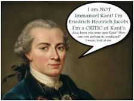

1690 Locke - The first fruits of the Enlightenment: universal human reason, freedom from religious authority, superstition, even religion itself. Locke proposes a "reasonable" christianity, a "natural religion" based in reason, though accepting intuitive, self-evident principles.
1739 Hume is an Empiricist (knowledge is founded on sense perception), and a critic of religion, who questions whether one’s senses can confirm natural religion. He shows the limits of knowledge: argument from design is faulty because its cause (God) is not proportional to the observed effect (the world). Religion has its origin in human psychology, especially in fear and desire for power.
1767 Voltaire proposes Deism (belief in a non-interventionist supreme being), and gives a scathing critique of traditional Christianity. Opponents claim that without God, morality would collapse.
1770 Diderot, an atheist materialist: ‘Religious explanations cannot be rationally defended.’
1774 Unitarianism is a movement named for its belief that the God is one person, as opposed to a Trinity. Unitarians believe that Jesus was inspired in his moral teachings, and he is a savior, but he was not himself a god. Unitarianism also rejects the doctrines of original sin, predestination, Biblical inerrancy, and punishment in an eternal hell.
1774 Romanticism: In reaction to the implications of the Enlightenment, Romantics emphasize one’s spontaneous, emotional, creative side; the artistic-contemplative connection to nature; a mystical union with the divine that produces works of art beyond the reach of reason.
1780 Thomas Jefferson considers the teachings of Jesus as having "the most sublime and benevolent code of morals which has ever been offered to man," yet he holds that the pure teachings of Jesus appear to have been appropriated by some of Jesus' early followers, resulting in a Bible that contains both "diamonds" of wisdom and the "dung" of ancient political agenda. Jefferson used certain passages of the New Testament to compose The Life and Morals of Jesus of Nazareth (the "Jefferson Bible"), which stressed his moral message without any miracles or reference to his divinity.

1781 Kant generates his "critical philosophy" - knowledge is based on the mind's active organization of sense experience. We canno experience the thing in itself, cannot know god, and so we must postulate god. All knowledge originates in sense experience organized by innate ideas - we can deduce a rational faith through regulative ideas (god, world, self) which bring unity at the highest level to experience. To act morally is to ignore all other incentives (emotion, self-interest) and to bind oneself to a universal moral law in the form of the categorical imperative - the principle of an act may be universalized. To act morally is to act autonomously, but our desire for happiness works subconsciously as we are seduced by "radical evil," which always subverts our moral action, so virtue and happiness don't coincide; hence we must postulate god and immortality, so that we have an infinite amount of time to progress toward virtue. Without these postulates, we would despair. Happiness and virtue will ultimately converge, but believers need a church to support and encourage them.
~~~~~~~~